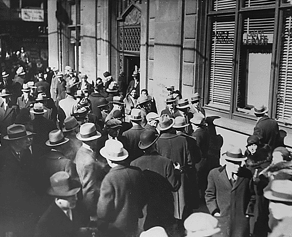

Directions: Study the photograph and the background, then answer the questions.

Background. About nine thousand banks failed in the United States during the Depression decade, and no federal insurance protected deposits. Industrial production had fallen by nearly half between 1929 and 1932. Contemporary estimates put about one worker in four out of work in 1933. In Chicago in February 1931, unemployed men queued outside a soup kitchen for a free meal, in a line like the breadlines in every large city.
1. What is happening in the photograph, and what fear is driving the crowd? Use the word for this event from the lesson.
2. A farmer borrowed money in 1928 and sells his crop in 1932 at half the 1928 price. Explain why the debt is harder to pay in 1932 even though the amount owed never changed. Use the lesson word for a general fall in prices.
3. The men in the Chicago line in 1931 were waiting for a free meal given out by charity. What is the lesson word for that line, and what two facts show that charity was failing to meet the need by 1932?
4. A family loses its home after the father's wages stop. Name the kind of settlement such families built on vacant land, what it was built from, and whose name it carried.
1. What is happening in the photograph, and what fear is driving the crowd? A bank run, a rush of depositors to withdraw their money from a bank at the same time, driven by fear that the bank will fail. The crowd is gathered to take deposits out before the bank closes, in the Michigan banking crisis of February 1933. Credit requires the term and the fear. (Blueprint 1)
2. Why is the debt harder to pay in 1932? Deflation, a general fall in prices across the economy, cut the price the farmer receives while the dollars he owes stayed the same. Each payment now takes a larger share of a smaller income, so the real burden of the debt rises even though the amount owed never changed. (Blueprint 1)
3. What is the lesson word for the line, and what two facts show charity failing? A breadline, a line of people waiting for free food given out by a charity, a church, or a city agency. Donations had fallen as incomes fell, so charities took in less at the moment of greatest need, and charity and city relief funds were running out of money in front of lines that kept growing, with about one worker in four out of work in 1933. (Blueprint 2)
4. Name the settlement, its materials, and the name it carried. A Hooverville, a shantytown built by homeless people from scrap wood, tin, and cardboard during the Depression, named in bitter reference to President Hoover. Credit requires the building materials and the reference to Hoover, because the name itself was an argument about responsibility. (Blueprint 2)
Teacher note. This check is formative. Question 1 is the observation diagnostic. Students who describe only a crowd have not yet connected the photograph to the banking mechanism. Question 2 predicts success on the writing task, because it requires the deflation mechanism stated in the student's own words.